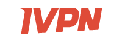
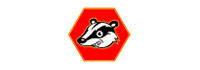
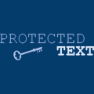
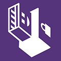

Lingua: English Deutsch Español 繁體中文
Sei sorvegliato. Organizzazioni private e lo stato monitorano e registrano la vostra attività online. privacytools-it vi mette a disposizione la conoscenza e gli strumenti per tutelare la propria privacy contro la sorveglianza di massa globale.
Privacy? Io non ho niente da nascondere.
Durante gli ultimi 16 mesi, discutendo di questo argomento in giro per il mondo, ogni volta qualcuno mi ha detto: "L'invasione della privacy non mi preoccupa perché non ho niente da nascondere". Rispondo sempre la stessa cosa. Prendo una penna, scrivo il mio indirizzo email e dico: "Ecco il mio indirizzo email. Quello che voglio che tu faccia quando torni a casa è mandarmi le password di tutti i tuoi account email, non solo quella elegante e rispettabile che usi per lavoro, ma tutte quante, perché voglio essere in grado di scandagliare quello che fai online, leggere quello che voglio e pubblicare tutto quello che trovo interessante. Dopo tutto, se non sei una persona cattiva, se non fai niente di sbagliato, non dovresti avere niente da nascondere." Nessuno ha accettato la mia offerta.
Leggi anche:
- Non ho niente da nascondere (argomento) (Wikipedia - In inglese)
- Come rispondete alla frase "Non ho niente da nascondere"? (reddit.com - In inglese)

L'Accordo UKUSA è un accordo tra il Regno Unito, Stati Uniti d'America, Australia, Canada, e Nuova Zelanda per cooperare nella raccolta, analisi e condivisione di dati di intelligence. I membri di questo gruppo, conosciuti come Cinque Occhi, si concentrano nella raccolta ed analisi di dati di intelligence da diverse parti del mondo. Mentre le nazioni che fanno parte dei Cinque Occhi si sono accordate sul non spiarsi a vicenda come avversari, dei leak da Snowden hanno rivelato che i membri dei Cinque Occhi si monitorano a vicenda i cittadini e condividono dati di intelligence per evitare l'infrazione della legge che proibisce loro di spiare i propri cittadini. Questa alleanza collabora anche con gruppi di altre nazioni estranee ai Cinque Occhi con lo scopo di condividere dati di intelligence (formando i Nove Occhi e i Quattordici Occhi), inoltre i Cinque Occhi e le nazioni di terze parti possono e si spiano tra di loro.
Cinque Occhi
2. Canada
3. Nuova Zelanda
4. Regno Unito
5. Stati Uniti d'America
Nove Occhi
7. Francia
8. Paesi Bassi
9. Norvegia
Quattordici Occhi
11. Germania
12. Italia
13. Spagna
14. Svezia
Perché è sconsigliato utilizzare un servizio che si trova in USA?

I servizi che si trovano negli Stati Uniti sono sconsigliati proprio per i programmi di sorveglianza del paese e per l'utilizzo delle National Security Letter (NSL) accompagnati da ordinanze restrittive, le quali vietano al destinatario di parlare della richiesta. Questa combinazione permette al Governo di obbligare segretamente le aziende a fornire accesso completo ai dati dei propri clienti e trasformare il servizio offerto in uno strumento di sorveglianza di massa.
Ne è un esempio Lavabit – un servizio di posta elettronica sicuro ora in disuso creato da Ladar Levison. L'FBI ha richiesto tutti i dati di Snowden dopo aver scoperto che utilizzò il servizio. Dal momento che Lavabit non teneva alcun log ed il contenuto delle email era criptato, l'FBI ha presentato un mandato di comparizione (con un'ordinanza restrittiva) per le chiavi private SSL del servizio. Ottenere le chiavi private SSL avrebbe permesso loro di di accedere alle comunicazioni (sia metadati che i contenuti non cifrati) in tempo reale per tutti i clienti di Lavabit, non solo di Snowden.
In conclusione, Levison consegnò le chiavi private SSL e, allo stesso tempo, chiudette il servizio. Il Governo USA minacciò di arrestare Levison, affermando che chiudendo il servizio fosse in violazione con l'ordinanza del tribunale.
Informazioni correlate
- Evita tutti i servizi che si trovano in USA e UK (In inglese)
- La prova che i Warrant Canary funzionano seguendo l'esempio di Surespot (In inglese)
- https://it.wikipedia.org/wiki/Accordo_UKUSA
- http://en.wikipedia.org/wiki/Lavabit#Suspension_and_gag_order (In inglese)
- https://en.wikipedia.org/wiki/Key_disclosure_law (In inglese)
- http://en.wikipedia.org/wiki/Portal:Mass_surveillance (In inglese)
| Classifica ordinabile dei servizi VPN | Prezzo Annuale | Periodo di prova | N. Server | Giurisdizione | Sito web |
|---|---|---|---|---|---|
 |
54 € | Sì | 162 | Italia | AirVPN.org |

|
45 € | Sì | 5 | Svezia | AzireVPN.com |

|
99 € | Sì | 27 | Hong Kong | blackVPN.com |

|
$ 52 | Sì | 18 | Islanda | Cryptostorm.is |
| $ 39,99 | No | 432 | Cipro del Nord | EarthVPN.com | |

|
$ 99.95 | Sì | 145 | Isole Vergini Britanniche | ExpressVPN.com |

|
35.88€ | No | 27 | Svezia | FrootVPN.com |

|
$ 119.95 | Sì | 88 | Malesia | hide.me |
|  | $ 100 | Sì | 21 | Gibilterra | IVPN.net |
| 60 € | Sì | 52 | Svezia | Mullvad.net | |

|
$ 69 | Sì | 475 | Panama | NordVPN.com |

|
$ 84 | Sì | 39 | Svezia | OVPN.com |

|
214.95 € | No | 41 | Panama | Perfect-Privacy.com |

|
Gratuito o 288€ | Sì | 112 | Svizzera | ProtonVPN.com |

|
$ 199,99 | No | 300 | Seychelles | Proxy.sh |

|
$ 39.95 | Sì | 48 | Seychelles | Trust.Zone |

|
$ 39.99 | No | 122 | Hong Kong | VPN.ht |

|
35.88€ | No | 80 | Seychelles | VPNTunnel.com |
Criteri per i servizi VPN
- Devono operare al di fuori degli USA ed altre nazioni facenti parte dei Cinque Occhi.
Leggi: Evitate tutti i servizi che si trovano in USA e UK (In inglese). - Supporto software ad OpenVPN.
- Accettano Bitcoin o contanti come metodi di pagamento.
- Nessuna informazione personale richiesta al momento della sottoscrizione. Solamente un nome utente, una password ed una email.
Non siamo affiliati con nessun servizio sopra citato. Questo dovrebbe darvi dei consigli onesti.
Altri servizi VPN
Foglio di calcolo con informazioni imparziali e dati facilmente verificabili su oltre 100 servizi VPN. Discussione su Reddit (In inglese - Post archiviato)
Informazioni correlate sulle VPN
- Quali servizi VPN ti rendono anonimo nel 2017? (In inglese)
(Nota: I servizi elencati per primi nell'articolo di TorrentFreaks sono sponsorizzati) - Come rendere le VPN ancora più sicure (In inglese)
- Ti puoi fidare di una VPN per proteggere la tua privacy? - SpiderOak (In inglese)
- Attenti alle recensioni false - Il marketing dietro le VPN ed i programmi di affiliazione (In inglese)
- Utilizzando una VPN sono anonimo - 7 miti sfatati (In inglese)
(Nota: Anche se è un'ottima lettura, stanno utilizzando l'articolo per farsi pubblicità) - Il servizio VPN Proxy.sh ha intercettato il traffico per catturare un hacker (In inglese)
- Policy Etica - Ecco le ragioni per cui Proxy.sh potrebbe tenere traccia del traffico (In inglese)
- IVPN.net raccoglie il tuo indirizzo email e l'indirizzo IP al momento della sottoscrizione (In inglese)
Leggi la dichiarazione di IVPN sull'email. - blackVPN ha annunciato che i log vengono eliminati dopo la disconnessione (In inglese)
- Utilizzate altri protocolli piuttosto che LT2P IPSec (In inglese)
Un "Warrant Canary" è un documento che dichiara che un'organizzazione non ha ricevuto alcun mandato di comparizione segreto in uno specifico lasso di tempo. Se questo documento non viene aggiornato in quel periodo di tempo allora l'utente può presumere che il servizio abbia ricevuto il mandato di comparizione citato poc'anzi e dovrebbe smettere di utilizzare il servizio.
Esempi di "Warrant Canary":
- https://proxy.sh/canary
- https://www.ivpn.net/resources/canary.txt
- https://www.vpnsecure.me/files/canary.txt
- https://www.bolehvpn.net/canary.txt
- https://lokun.is/canary.txt
- https://www.ipredator.se/static/downloads/canary.txt
Informazioni correlate sui "Warrant Canary"
- Domande Frequenti sui "Warrant Canary" (In inglese)
- Compagnie ed Aziente con dei "Warrant Canary" (In inglese)
- Osservazioni sui "Warrant Canary" a cura di Bruce Schneier ed un esempio sulle leggi contro i "Warrant Canary".
Mozilla Firefox
 Firefox è veloce, affidabile, open source e rispetta la privacy. Non dimenticate di modificare alcune impostazioni secondo i nostri
consigli: WebRTC e about:config oltre ad aggiungere estensioni attente alla privacy.
Firefox è veloce, affidabile, open source e rispetta la privacy. Non dimenticate di modificare alcune impostazioni secondo i nostri
consigli: WebRTC e about:config oltre ad aggiungere estensioni attente alla privacy.
SO: Windows, Mac, Linux, Android, BSD.
 Il nuovo browser open source "Brave" blocca automaticamente le pubblicità e i tracker, rendendolo più veloce e sicuro del tuo attuale browser. Brave si basa su Chromium.
Il nuovo browser open source "Brave" blocca automaticamente le pubblicità e i tracker, rendendolo più veloce e sicuro del tuo attuale browser. Brave si basa su Chromium.Quando si visita una pagina web, il browser invia di proposito le informazioni sulla configurazione, come ad esempio i font disponibili, il tipo di browser e le estensioni. Se questa combinazione di informazioni è univoca, potrebbe essere possibile identificarti e tracciarti senza l'ausilio dei cookie. EFF ha creato uno strumento chiamato Panopticlick per testare il browser per capire quanto sia unico.
Bisogna guardare cosa stanno segnalando la maggior parte dei browser, quindi utilizzare quelle variabili per riportare il browser all'interno di quella popolazione. Ciò significa avere gli stessi font, plugin ed estensioni installate della maggior parte degli utenti. Bisognerebbe avere una stringa che falsa l'user agent per farlo combaciare con ciò che utilizza la maggior parte degli utenti, avere le stesse impostazioni abilitate e disabilitate - come ad esempio DNT e WebGL. È necessario far apparire il browser il più comune possibile. Disabilitare JavaScript, usare Linux, o anche TBB, distinguerà il browser dalla massa.
I browser moderni non sono progettati per proteggere la privacy degli utenti in rete. Piuttosto che preoccuparsi di essere univoci, sarebbe più pratico utilizzare delle estensioni gratuite come Privacy Badger, uBlock Origin e Disconnect. Non solo rispettano la tua libertà, ma anche la privacy. Farai più strada con queste piuttosto che provare a manipolare l'impronta digitale del tuo browser.
Informazioni correlate
- Quanto è univoco il tuo browser? Peter Eckersley, EFF. (In inglese)
- Discuti dell'argomento "fingerprinting" con noi su reddit.com (In inglese)
- La nostra sezione dedicata alle estensioni attente alla privacy per Firefox
- BrowserLeaks.com - Strumenti per testare la sicurezza del browser, che ti diranno con precisione quali informazioni personali potrebbero essere rivelate senza alcun consenso quando navighi in rete (In inglese)
Software come NoScript possono impedirlo, ma è sicuramente una buona idea bloccare direttamente il protocollo per essere sicuri.
Come disabilito WebRTC in Firefox?
In breve: Imposta il valore "media.peerconnection.enabled" su "false" in "about:config".
Spiegazione:
- Scrivi "about:config" nella barra degli indirizzi di Firefox e premi invio.
- Premi il bottone "Farò attenzione, prometto!"
- Cerca "media.peerconnection.enabled"
- Fai doppio click sulla voce, la colonna "Valore" adesso dovrebbe mostrare "false"
- Fatto. Rifai il test del Leak WebRTC.
Se vuoi assicurarti che ogni singola impostazione di WebRTC sia veramente disabilitata cambia le seguenti impostazioni:
- media.peerconnection.turn.disable = true
- media.peerconnection.use_document_iceservers = false
- media.peerconnection.video.enabled = false
- media.peerconnection.identity.timeout = 1
Adesso WebRTC è disabilitato al 100%.
Come risolvo il Leak WebRTC in Google Chrome?
WebRTC non può essere completamente disabilitato su Chrome, ma è comunque possibile reindirizzare le richieste (ed impedire i leak) utilizzando un'estensione. Due soluzioni open source includono WebRTC Leak Prevent (a seconda della situazione alcune opzioni andrebbero modificate), e uBlock Origin (seleziona "Impedisci a WebRTC di rivelare l'indirizzo IP locale" nelle Impostazioni).
E per gli altri browser?
Chrome su iOS, Internet Explorer e Safari non hanno ancora implementato WebRTC. Noi consigliamo di utilizzare Firefox su tutti i dispositivi.
Impedisci il tracciamento con "Privacy Badger"
Privacy Badger è un'estensione che impedisce agli inserzionisti ed ai tracker di terze parti di tracciare segretamente qualsiasi pagina web tu visiti in rete. Privacy Badger impara dai tracker mentre navighi analizzando le richieste alle risorse esterne dei siti web. Presta attenzione perché Google Analytics non è considerato un tracker di terze parti da Privacy Badger, ciò significa che non verrà bloccato non se non utilizzi un altro blocker come uBlock Origin. https://www.eff.org/privacybadger/
Blocca Pubblicità e Tracker con "uBlock Origin"
Un efficente blocker ad ampio spettro che nonostante il poco utilizzo di memoria è in grado di caricare e forzare migliaia di altri filtri rispetto ai blocker più popolari in circolazione. Non c'è alcuna strategia di monetizzazione dietro ed
è completamente open source. Consigliamo Firefox ma uBlock Origin funziona anche in altri browser come Safari, Opera, e Chromium. uBlock, al contrario di AdBlock Plus, non permette le cosìddette "pubblicità accettabili".
https://addons.mozilla.org/firefox/addon/ublock-origin/
Elimina automaticamente i Cookie con "Cookie AutoDelete"

Rimuove automaticamente i cookie quando non sono più utilizzati dalle schede aperte nel browser. Con i cookie le sessioni persistenti, così come le informazioni utilizzate per spiarti, verranno eliminate.
https://addons.mozilla.org/firefox/addon/cookie-autodelete/
Crittografia con "HTTPS Everywhere"

Un'estensione di Firefox, Chrome, e Opera che cifra le connessioni con la maggior parte dei siti web, rendendo la navigazione ancora più sicura. Una collaborazione tra The Tor Project ed Electronic Frontier Foundation.
https://www.eff.org/https-everywhere
Blocca le Reti per la Consegna dei Contenuti (CDN) con "Decentraleyes"
Emula le Reti per la Consegna di Contenuti in locale intercettando le richieste, trovando la risorsa richiesta ed iniettandola nell'ambiente. Tutto questo succede in modo istantaneo, automatico, e non richiede alcuna configurazone prima dell'utilizzo. Codice sorgente: GitHub.
https://addons.mozilla.org/firefox/addon/decentraleyes/
Ferma le richieste tra siti web (cross-site) con "uMatrix"

Molti siti web integrano delle funzioni che permettono ad altri siti web di tracciarti, come Google Analytics od i pulsanti "Mi Piace" di Facebook. uMatrix ti permette di avere il controllo su queste richieste. Questo ti permette un maggiore e migliore controllo
sulle informazioni che riveli online.
https://addons.mozilla.org/firefox/addon/umatrix/
Assumi il controllo completo con "NoScript Security Suite"

Estensione completamente personalizzabile che ti permette di attivare in modo selettivo Javascript, Java, e Flash solamente nei siti di cui ti fidi. Sconsigliata agli utenti comuni, richiede delle conoscenze tecniche per essere configurata.
https://addons.mozilla.org/firefox/addon/noscript/
Preparativi:
- Scrivi "about:config" nella barra degli indirizzi di Firefox e premi invio.
- Premi il bottone "Farò attenzione, prometto!"
- Segui le istruzioni qui sotto...
Come iniziare:
- privacy.firstparty.isolate = true
- Il risultato degli sforzi di Tor Uplift, questa opzione isola tutte ciò che potrebbe identificare il browser (e.g. cookies) nel dominio che si sta visitando, con lo scopo di prevenire il tracciamento in altri domini.
- privacy.resistFingerprinting = true
- Il risultato degli sforzi di Tor Uplift, questa opzione rende Firefox ancora più resistente al "fingerprinting".
- privacy.trackingprotection.enabled = true
- Questa è la nuova protezione di Mozilla contro il tracciamento. Utilizza la lista dei filtri di Disconnect.me, che è ridondante se stai già utilizzando i filtri di terze parti di uBlock Origin, di conseguenza dovresti impostarla su false se è questo il caso.
- browser.cache.offline.enable = false
- Disabilita la cache offline.
- browser.safebrowsing.malware.enabled = false
- Disabilita la scansione per i malware di Google Safe Browsing. Un rischio per la sicurezza, ma migliora la privacy.
- browser.safebrowsing.phishing.enabled = false
- Disabilita Google Safe Browsing e la protezione da phishing. Un rischio per la sicurezza, ma migliora la privacy.
- browser.send_pings = false
- Se l'attributo è impostato su true, permette ai siti web di tracciare i click dei visitatori.
- browser.sessionstore.max_tabs_undo = 0
- Le schede chiuse di recente rimangono temporaneamente memorizzate nel menu -> Cronologia e -> Schede Chiuse di Recente anche se Firefox è impostato per non memorizzare la cronologia.
- browser.urlbar.speculativeConnect.enabled = false
- Disabilita il pre-caricamento dell'autocompletamento degli URL. Firefox pre-carica gli URL che vengono autocompletati quando un utente digita nella barra degli indirizzi, il che è motivo di preoccupazione se vengono suggeriti URL al quale l'utente non vuole collegarsi. Fonte (In inglese)
- dom.battery.enabled = false
- I proprietari dei siti web possono conoscere lo stato della batteria del tuo dispositivo. Fonte (In inglese)
- dom.event.clipboardevents.enabled = false
- I siti web possono sapere se copi, incolli o tagli qualcosa da una pagina web oltre ad informarli sulla parte interessata. Questa opzione impedisce l'invio di queste notifiche.
- geo.enabled = false
- Disabilita la geolocalizzazione.
- media.navigator.enabled = false
- I siti web possono conoscere lo stato del microfono e della webcam del tuo dispositivo.
- network.cookie.cookieBehavior = 1
- Disabilita i cookie
- 0 = Accetta tutti i cookie per impostazione predefinita
- 1 = Accettali solamente dal sito di origine (blocca i cookie di terze parti)
- 2 = Blocca tutti i cookie per impostazione predefinita
- network.cookie.lifetimePolicy = 2
- I cookie vengono eliminati al termine della sessione
- 0 = Accetta normalmente i cookie
- 1 = Chiedi per tutti i cookie
- 2 = Accettali solo per la sessione in corso
- 3 = Accettali per N giorni
- network.http.referer.trimmingPolicy = 2
- Invia solo lo schema, l'host e la porta nell'header
Referer - 0 = Invia l'URL completo nell'header
Referer - 1 = Invia l'URL senza le sue "query string" nell'header
Referer - 2 = Invia solo lo schema, l'host e la porta nell'header
Referer - network.http.referer.XOriginPolicy = 2
- Invia solo l'header
Refererquando gli hostname combaciano. (Nota: se notate gravi malfunzionamenti, provate1in combinazione con l'impostazioneXOriginTrimmingPolicyqui sotto.) Fonte (In inglese) - 0 = Invia
Refererin tutti i casi - 1 = Invia
Refererai siti con lo stesso eTLD - 2 = Invia
Referersolo quando l'hostname combacia - network.http.referer.XOriginTrimmingPolicy = 2
- Quando si sta inviando
Refererattraverso le origini, trasmetti solo lo schema, l'host e la porta nell'headerRefererdella richiesta d'origine. Fonte (In inglese) - 0 = Invia l'URL completo nel
Referer - 1 = Invia l'URL senza la "query string" nel
Referer - 2 = Invia solo lo schema, l'host e la porta nel
Referer - webgl.disabled = true
- WebGL è un potenziale rischio per la sicurezza. Fonte (In inglese)
Informazioni correlate:
- ffprofile.com - Ti aiuta a creare un profilo di Firefox con i valori predefiniti che preferisci (In inglese)
- mozillazine.org - Preferenze relative alla Sicurezza e alla Privacy (In inglese)
- user.js Firefox hardening stuff - Questo è un file di confgurazione user.js per Mozilla Firefox che dovrebbe rendere le impostazioni di Firefox ancora più restrittive e quindi più sicure.
- Privacy Settings - Un'estensione per Firefox che altera in modo semplice le impostazioni della privacy integrate nel browser attraverso una barra degli strumenti.


Interessanti servizi email in sviluppo
- Confidant Mail - Un servizio email cifrato, open source e senza SMTP ottimizzato per allegati di grandi dimensioni. È un'alternativa sicura a prova di spam alle classiche email e servizi di condivisione di file online. Utilizza la crittografia GNU Privacy Guard (GPG) per cifrare l'autenticazione e i contenuti, e TLS 1.2 con chiavi ephemeral per fornire la cifratura.
Diventa tu stesso un servizio di email con Mail-in-a-Box

Sii un passo avanti ed assumi il controllo della tua email con questo server facile da configurare. Mail-in-a-Box ti permette di ospitare il tuo servizio email in pochi e semplici passi. È come se stessi creando la tua Gmail, ma avendone pieno controllo. Tecnicamente, Mail-in-a-Box trasforma un computer nel cloud in un server email funzionante. Non devi essere un esperto di tecnologia per configurarlo. Scopri di più: https://mailinabox.email/
Strumenti per migliorare la privacy nelle email
- gpg4usb - Un piccolo editor portatile facile da utilizzare per cifrare e decifrare qualsiasi messaggio di testo o file. Per Windows e Linux. Tutorial GPG (In inglese).
- Mailvelope - Un estensione per il browser che permette lo scambio di email seguendo lo standard di cifratura OpenPGP.
- Enigmail - Un'estensione di sicurezza per Thunderbird e Seamonkey. Ti permette di inviare e ricevere email firmate e\o cifrate con lo standard OpenPGP.
- TorBirdy - Questa estensione configura Thunderbird per la connessione tramite la rete anonima Tor.
- Email Privacy Tester - Questo strumento invia una email al proprio indirizzo ed effettuerà dei test relativi alla privacy.
Informazioni Correlate
- La legge sulla "Privacy" lascia ancora una volta le email nel cloud aperte alle forze dell'ordine (In inglese) - I dati archiviati nel cloud per più di sei mesi sono considerati abbandonati e le agenzie di intelligence possono accedervi senza un mandato. Lezione: Utilizzate un client email esterno come Thunderbird o Enigmail, scaricate le vostre email ed archiviatele in locale. Non lasciatele mai nel server.
- OpenMailBox tiene i log dei meta-dati per un anno - Discussione del forum, risponde l'amministratore del server (In inglese)
- L'FBI sequestra di nuovo i server May First/Riseup (In inglese)
- I server di Autistici/Inventati sono compromessi (In inglese) - I servizi di crittografia offerti dai server di Autistici/Inventati sono stati compromessi il 15 Giugno 2004. La cosa si è scoperta il 21 Giugno 2005. Un anno dopo. Durante un'investigazione in una singola casella postale, la Polizia Postale potrebbe aver spiato le conversazioni private di ogni singolo utente che viaggiavano nei server autistici.org/inventati.org.
 Claws Mail è un client email e news gratuito, open source e basato su GTK+. Offre una configurazione semplice e caratteristiche in abbondanza. Include Gpg4win,
una suite di crittografia per Windows.
Claws Mail è un client email e news gratuito, open source e basato su GTK+. Offre una configurazione semplice e caratteristiche in abbondanza. Include Gpg4win,
una suite di crittografia per Windows.Vale la pena menzionare
- K-9 Mail - Un applicazione per le email indipendente per Android. Supporta sia le caselle POP3 che IMAP, ma nel caso di IMAP supporta solo le email push.
- GNU Privacy Guard - Crittografia delle email. GnuPG è un'alternativa sotto licenza GPL alla suite di crittografia PGP. Tutorial (In inglese). Utilizzate GPGTools per Mac OS X.
- Mailpile (Beta) - Un client web-mail moderno e veloce con una crittografia user-friendly e con funzioni per la privacy.
I2P-Bote
I2P-Bote è un sistema dedicato alle email completamente decentralizzato. Supporta identità differenti e non rivela l'header delle email. Attualmente (2015), si trova ancora in versione beta e vi si può accedere tramite la sua web-app o tramite IMAP ed SMTP. Tutte le email inviate da Bote sono cifrate in modo trasparente con la crittografia end-to-end e, in modo facoltativo, firmate con la chiave privata del mittente.
SO: Windows, Mac, Linux, Android, F-Droid.
Bitmessage
 Bitmessage è un protocollo di comunicazione P2P utilizzato per l'invio di messaggi cifrati ad una o più persone. È decentralizzato ed affidabile,
ciò significa che non hai bisogno di fidarti di alcun certificato di nessuna entità. Utilizza un'autenticazione solida così il mittente non può essere falsificato, e punta a nascondere dati "senza contenuto".
Bitmessage è un protocollo di comunicazione P2P utilizzato per l'invio di messaggi cifrati ad una o più persone. È decentralizzato ed affidabile,
ciò significa che non hai bisogno di fidarti di alcun certificato di nessuna entità. Utilizza un'autenticazione solida così il mittente non può essere falsificato, e punta a nascondere dati "senza contenuto".
SO: Windows, Mac, Linux.
RetroShare
 Retroshare crea una connessione cifrata verso i tuoi amici. Nessuno può spiarti. Retroshare è completamente decentralizzato. Ciò significa che non esiste un server centrale. È tutto open source e gratuito. Non ci sono costi da sostenere, pubblicità e Termini di Servizio.
Retroshare crea una connessione cifrata verso i tuoi amici. Nessuno può spiarti. Retroshare è completamente decentralizzato. Ciò significa che non esiste un server centrale. È tutto open source e gratuito. Non ci sono costi da sostenere, pubblicità e Termini di Servizio.searx
Motore di ricerca metasearch open source, raccoglie i risultati da altri motori di ricerca senza mantenere le informazioni sugli utenti che ne fanno uso. Nessun log, nessuna pubblicità e nessun tracker.
 Risultati di ricerca di Google, proteggendo completamente la privacy. Dietro StartPage c'è un'azienda europea che è ossessionata dalla privacy dal 2006.
Risultati di ricerca di Google, proteggendo completamente la privacy. Dietro StartPage c'è un'azienda europea che è ossessionata dalla privacy dal 2006.DuckDuckGo
Il motore di ricerca che non ti traccia. Parte del codice sorgente di DuckDuckGo è ospitato su GitHub, ma il core è proprietario. L'azienda ha sede negli USA.
Estensioni di Firefox
- Google search link fix - Questa estensione impedisce alle pagine dei risultati di ricerca Google e Yandex di modificare i link quando ci clicchi. È utile quando devi copiare un link e fa bene alla privacy poiché impedisce ai motori di ricerca di registrare i click. (Open Source)
Vale la pena menzionare
- Qwant - La filosofia di Qwant si basa su due princìpi: nessun tracciamento e nessun filtro. Qwant fu lanciato in Francia nel Febbraio 2013. Privacy Policy.
- MetaGer - Un motore di ricerca metasearch, che si trova in Germania. Si concentra sulla protezione della privacy degli utenti.
- ixquick.eu - Restituisce i risultati migliori da più motori di ricerca. Situato nei Paesi Bassi.
Signal
Signal è un'applicazione sviluppata da Open Whisper Systems. Oltre alla messaggistica istantanea fornisce anche audio e video chiamate. Tutte le comunicazioni sono cifrate utilizzando la crittografia end-to-end. Signal è gratuita ed open source, dando la possibilità di verificare la sua sicurezza mostrando il codice. Il team di sviluppo viene supportato dalle donazioni. Non contiene pubblicità, e per utilizzarla non bisogna sostenere alcun costo.
SO: Android, iOS, macOS, Windows, distribuzioni Linux basate su Debian
Wire
 Wire è un'applicazione sviluppata da Wire Swiss GmbH.
Permette di effettuare audio e video chiamate oltre che lo scambio di messaggi, il tutto cifrato utilizzando la crittografia end-to-end. Wire è gratuita ed open source, dando la possibilità di verificare la sua sicurezza mostrando il codice.
The development team is backed by Iconical and they will monetize in the future with premium features/services.
Wire è un'applicazione sviluppata da Wire Swiss GmbH.
Permette di effettuare audio e video chiamate oltre che lo scambio di messaggi, il tutto cifrato utilizzando la crittografia end-to-end. Wire è gratuita ed open source, dando la possibilità di verificare la sua sicurezza mostrando il codice.
The development team is backed by Iconical and they will monetize in the future with premium features/services.
Attenzione: L'azienda mantiene una lista di tutti gli utenti che contattate finché non eliminate l'account.
SO: Android, iOS, macOS, Windows, Linux, Web
Ricochet (Desktop)
 Ricochet utilizza la rete TOR per connettersi ai tuoi contatti senza dipendere da nessun server di messaggistica. Ricochet crea un servizio nascosto, che viene utilizzato per comunicare
con i tuoi contatti senza rivelare la tua posizione o l'indirizzo IP. Al posto di un nome utente, riceverai un indirizzo univoco simile a ricochet:rs7ce36jsj24ogfw. Gli altri utenti di Ricochet potranno usare questo indirizzo per richiedere di essere aggiunti alla tua lista contatti.
Ricochet utilizza la rete TOR per connettersi ai tuoi contatti senza dipendere da nessun server di messaggistica. Ricochet crea un servizio nascosto, che viene utilizzato per comunicare
con i tuoi contatti senza rivelare la tua posizione o l'indirizzo IP. Al posto di un nome utente, riceverai un indirizzo univoco simile a ricochet:rs7ce36jsj24ogfw. Gli altri utenti di Ricochet potranno usare questo indirizzo per richiedere di essere aggiunti alla tua lista contatti.
SO: Windows, Mac, Linux
Vale la pena menzionare
- ChatSecure - ChatSecure è un'app di messaggistica istantanea gratuita ed open source con crittografia OTR su protocollo XMPP.
- Cryptocat - Messaggistica cifrata open source. Supporta la condivisione di file tra più dispositivi. Disponibile per Windows, Linux e Mac.
- Kontalk - Una rete di messaggistica istantanea supportata dalla comunità con crittografia end-to-end. I canali client-server e server-server sono completamente cifrati.
- Conversations - Un client Jabber/XMPP open source per smartphone Android 4.0+. Supporta la crittografia end-to-end con OMEMO, OTR o openPGP.
- List of OTR Clients - Wikipedia
Informazioni correlate
- Ricochet, la messaggistica che risolve il problema dei metadati, passa il controllo di sicurezza | Motherboard (In inglese)
- Chattare segretamente mentre siamo tutti sorvegliati - firstlook.org (In inglese)
- Utenti avanzati e con esigenze specifiche possono scaricare direttamente l'APK di Signal. La maggior parte degli utenti non dovrebbe farlo in circostanze normali
- L'app di messaggisitca sicura Wire tiene una lista di tutti gli utenti che contatti | Motherboard (In inglese)
- La crittografia di Telegram non è sicura.
- Telegram viene pubblicizzato come messaggistica sicura, ma non è sicura in modo predefinito.
Signal
Signal è un'applicazione sviluppata da Open Whisper Systems. Oltre alla messaggistica istantanea fornisce anche audio e video chiamate. Tutte le comunicazioni sono cifrate utilizzando la crittografia end-to-end. Signal è gratuita ed open source, dando la possibilità di verificare la sua sicurezza mostrando il codice. Il team di sviluppo viene supportato dalle donazioni. Non contiene pubblicità, e per utilizzarla non bisogna sostenere alcun costo.
SO: iOS, Android, macOS, Windows, distribuzioni Linux basate su Debian
Wire
Wire è un'applicazione sviluppata da Wire Swiss GmbH.
Permette di effettuare audio e video chiamate oltre che lo scambio di messaggi, il tutto cifrato utilizzando la crittografia end-to-end. Wire è gratuita ed open source, dando la possibilità di verificare la sua sicurezza mostrando il codice.
The development team is backed by Iconical and they will monetize in the future with premium features/services.
Attenzione: L'azienda mantiene una lista di tutti gli utenti che contattate finché non eliminate l'account.
SO: Android, iOS, macOS, Windows, Linux, Web
Linphone
 Linphone è un servizio di comunicazione SIP open source e gratuito, disponibile per dispositivi mobili, desktop e browser web. Supporta ZRTP per
le comunicazioni audio e video end-to-end.
Linphone è un servizio di comunicazione SIP open source e gratuito, disponibile per dispositivi mobili, desktop e browser web. Supporta ZRTP per
le comunicazioni audio e video end-to-end.
SO: iOS, Android, Windows Phone, Linux, Windows, Mac, Browser (Web)
Vale la pena menzionare
- Jitsi - Jitsi è un'applicazione gratuita ed open source che permette di effettuare chiamate vocali (VoIP), videoconferenze e messaggi istantanei.
- Tox - Un programma gratuito, open source e peer-to-peer cifrato che permette videochiamate e lo scambio di messaggi istantanei.
- Ring (formerly SFLphone) - Ti permette di avere pieno controllo sulle comunicazioni che avvengono al suo interno oltre che ad un impareggiabile livello di privacy.
Informazioni correlate
- Utenti avanzati e con esigenze specifiche possono scaricare direttamente l'APK di Signal. La maggior parte degli utenti non dovrebbe farlo in circostanze normali
- L'app di messaggisitca sicura Wire tiene una lista di tutti gli utenti che contatti | Motherboard (In inglese)
OnionShare
 OnionShare è uno strumento open source che ti permette di condividere file di qualsiasi dimensione in modo anonimo e sicuro.
Funziona avviando un web server, così da renderlo un servizio accessibile tramite rete TOR, generando un URL impossibile da indovinare per accedere e scaricare i file. Non è necessario né impostarlo in un server da qualche parte in Internet né utilizzare un servizio di condivisione file esterno. Ospiti il file sul tuo computer ed utilizzi un servizio onion su TOR per renderlo temporaneamente disponibile in Internet.
OnionShare è uno strumento open source che ti permette di condividere file di qualsiasi dimensione in modo anonimo e sicuro.
Funziona avviando un web server, così da renderlo un servizio accessibile tramite rete TOR, generando un URL impossibile da indovinare per accedere e scaricare i file. Non è necessario né impostarlo in un server da qualche parte in Internet né utilizzare un servizio di condivisione file esterno. Ospiti il file sul tuo computer ed utilizzi un servizio onion su TOR per renderlo temporaneamente disponibile in Internet.
SO: Windows, Mac, Linux.
Magic Wormhole
Trasferisci qualsiasi cosa da un computer ad un altro, in modo sicuro. Questo pacchetto ti mette a disposizione una libreria ed uno strumento che funziona tramite la riga di comando chiamato wormhole, che rende possibile il trasferimento di file e cartelle di dimensioni arbitrarie (o piccole porzioni di testo) da un computer all'altro. I due nodi di uscita sono identificati utilizzando due "codici wormhole" uguali: in pratica la macchina che invia il file genera e mostra il codice a schermo, che dovrà poi essere digitato nella macchina di destinazione. I codici sono corti e facili da pronunciare, utilizzando una lista fonetica distinta. A destinazione basterà inserire solo parte del codice grazie all'autocompletamento. I codici wormhole hanno un solo utilizzo, quindi non è necessario memorizzarli.
SO: multi-piattaforma (python)
Seafile
 Seafile offre 100 GB di archiviazione a $10/mese ma è anche possibile ospitare il proprio server. I tuoi dati sono memorizzati in Germania o negli USA con Amazon Web Service
se decidi di utilizzare il cloud. Cifratura dei file con la propria password.
Seafile offre 100 GB di archiviazione a $10/mese ma è anche possibile ospitare il proprio server. I tuoi dati sono memorizzati in Germania o negli USA con Amazon Web Service
se decidi di utilizzare il cloud. Cifratura dei file con la propria password.
Client: Windows, Mac, Linux, iOS, Android. Server: Linux, Raspberry Pi, Windows.
Nextcloud - Scegli il tuo host
 Funzionalità simili alla popolare controparte Dropbox, con la differenza che Nextcloud è gratuito ed open source, dando quindi la possibilità a chiunque di installarlo in un server privato a costo zero, senza limiti di spazio o numero di client connessi.
Funzionalità simili alla popolare controparte Dropbox, con la differenza che Nextcloud è gratuito ed open source, dando quindi la possibilità a chiunque di installarlo in un server privato a costo zero, senza limiti di spazio o numero di client connessi.
Client: Windows, Mac, Linux, BSD, Unix, iOS, Android, Fire OS. Server: Linux.
Least Authority S4 - Per gli esperti
S4 (Simple Secure Storage Service - tradotto in Servizio di Archiviazione Semplice e Sicuro) è il sistema di backup sicuro di Least Authority per privati ed aziende. Cifratura al 100% lato client e trasparenza open source. 250GB a $9.95/mese o 5TB for $25.95/mese. I server sono ospitati con Amazon S3 negli USA.
SO: Linux, Windows, Mac, OpenSolaris, BSD. (Installazione per utenti esperti)
Vale la pena menzionare
- Muonium - Archiviazione dei file sul cloud cifrata e gratuita.
Informazioni correlate
- Cryptomator - Cifratura dei file lato client con AES gratuita. Software open source: Nessuna backdoor, nessuna registrazione.
Seafile
Seafile è un programma per ospitare file. Questi file sono memorizzati in un server centrale e possono essere sincronizzati con i propri computer e dispositivi mobili tramite il
client Seafile. Si può accedere ai file anche tramite l'interfaccia web del server.
Client: Windows, Mac, Linux, iOS, Android. Server: Linux, Raspberry Pi, Windows.
Pydio
 Pydio è un programma open source che trasforma qualsiasi server (NAS, cloud IaaS o PaaS) in una piattaforma di condivisione di file per la tua azienda. È un'alternativa
a SaaS Boxes e Drives, con più controllo, sicurezza e privacy, oltre a costi totali di proprietà (TCO - Total Cost of Ownership) vantaggiosi.
Pydio è un programma open source che trasforma qualsiasi server (NAS, cloud IaaS o PaaS) in una piattaforma di condivisione di file per la tua azienda. È un'alternativa
a SaaS Boxes e Drives, con più controllo, sicurezza e privacy, oltre a costi totali di proprietà (TCO - Total Cost of Ownership) vantaggiosi.
SO: Windows, Mac, Linux, iOS, Android.
Tahoe-LAFS
Vale la pena menzionare
- Nextcloud - Gratuito ed open source, permette a chiunque di installarlo in un server privato a costo zero, senza limiti di spazio o numero di client connessi.
- Muonium - Archiviazione dei file sul cloud cifrata e gratuita.
SparkleShare
 SparkleShare crea una cartella apposita sul tuo computer. Al suo interno potrai aggiungere delle cartelle (o "progetti") da remoto. Questi progetti verranno sincronizzati
con l'host e con tutti i "peer" quando qualcuno apporterà una modifica, rimuoverà o modificherà un file.
SparkleShare crea una cartella apposita sul tuo computer. Al suo interno potrai aggiungere delle cartelle (o "progetti") da remoto. Questi progetti verranno sincronizzati
con l'host e con tutti i "peer" quando qualcuno apporterà una modifica, rimuoverà o modificherà un file.
SO: Windows, Mac, Linux.
Syncany
 Syncany permette agli utenti di effettuare un backup e di condividere determinate cartelle della loro macchina utilizzando qualsiasi tipo di archiviazione. Syncany è open source e fornisce la crittografia dei dati
oltre ad un incredibile flessibilità in termini di archiviazione e servizi. I file vengono cifrati prima del caricamento.
Syncany permette agli utenti di effettuare un backup e di condividere determinate cartelle della loro macchina utilizzando qualsiasi tipo di archiviazione. Syncany è open source e fornisce la crittografia dei dati
oltre ad un incredibile flessibilità in termini di archiviazione e servizi. I file vengono cifrati prima del caricamento.
SO: Windows, Mac, Linux.
Syncthing
 Syncthing sostituisce i servizi di sincronizzazione e cloud con qualcosa di aperto, affidabile e decentralizzato. I tuoi dati sono i tuoi dati e meriti di decidere dove
salvarli, come trasmetterli attraverso Internet e se condividerli con terzi.
Syncthing sostituisce i servizi di sincronizzazione e cloud con qualcosa di aperto, affidabile e decentralizzato. I tuoi dati sono i tuoi dati e meriti di decidere dove
salvarli, come trasmetterli attraverso Internet e se condividerli con terzi.Vale la pena menzionare
- git-annex - Permette la gestione dei file con git senza verificarne il contenuto. Potrebbe sembrare un paradosso, ma è utile quando si ha a che fare con file più grandi di quanto git possa gestire facilmente, sia per motivi di memoria, tempo o spazio su disco.
andOTP
andOTP è una app open source per l'autenticazione a due fattori per Android 4.4 e superiore. Supporta lo standard TOTP (Algoritmo OTP basato sul tempo). Per iniziare a generare le password basterà fare una semplice scansione del codice QR. andOTP è un "fork" di OTP Authenticator sviluppata da Bruno Bierbaumer, che purtroppo non viene più aggiornata dal 2015. È possibile far eun backup dei token esportandoli e cifrandoli con la crittografia OpenPGP.
SO: Android
FreeOTP
FreeOTP è una app open source per l'autenticazione a due fattori per sistemi che utilizzano il protocollo OTP (one-time password). I token possono essere aggiunti con facilità scansionando il codice QR. FreeOTP supporta gli standard HOTP (Algoritmo OTP basato su HMAC) e TOTP (Algoritmo OTP basato sul tempo). Questo significa che non è richiesto alcun componente lato server per funzionare.
SO: Android
Authenticator
Vale la pena menzionare
- U2F Zero - U2F Zero è un token hardware open source per l'autenticazione a due fattori. Funziona con qualsiasi servizio abilitato a U2F. L'ultima versione utilizza la derivazione di chiavi crittografiche e non ha limiti di registrazione.
Master Password - Multi-piattaforma
 Master Password si basa su un sistema ingegnoso per generare le password, e questo ti permette di non perderle mai. Le password generate non vengono memorizzate:
sono genarate al momento partendo dal tuo nome, il sito in questione e la password principale associata al tuo nome. Non è richiesta alcuna sincronizzazione, backup o accesso ad Internet.
Master Password si basa su un sistema ingegnoso per generare le password, e questo ti permette di non perderle mai. Le password generate non vengono memorizzate:
sono genarate al momento partendo dal tuo nome, il sito in questione e la password principale associata al tuo nome. Non è richiesta alcuna sincronizzazione, backup o accesso ad Internet.
SO: Windows, Mac, Linux, iOS, Android, Web.
KeePass / KeePassX - Locale
 KeePass è un gestore di password gratuito ed open source, che ti aiuta ad organizzare le password in maniera sicura. Tutte le password sono memorizzate in un database, protetto da una password
o da un file chiave. I database vengono cifrati utilizzando i migliori, nonché i più sicuri, algoritmi di crittografia conosciuti:: AES and Twofish. Vedi anche: KeePassX (non viene aggiornato regolarmente) e KeePassXC.
KeePass è un gestore di password gratuito ed open source, che ti aiuta ad organizzare le password in maniera sicura. Tutte le password sono memorizzate in un database, protetto da una password
o da un file chiave. I database vengono cifrati utilizzando i migliori, nonché i più sicuri, algoritmi di crittografia conosciuti:: AES and Twofish. Vedi anche: KeePassX (non viene aggiornato regolarmente) e KeePassXC.
SO: Windows, Mac, Linux, iOS, Android, BSD.
LessPass - Browser
 LessPass è un gestore di password gratuito ed open source che genera delle password uniche per siti web, account email, o per qualunque cosa si basi su una password principale ed un informazione che conosci.
Non è richiesta alcuna sincronizzazione. Utilizza PBKDF2 e SHA-256. È consigliato utilizzare le estensioni per il browser per una maggiore sicurezza.
LessPass è un gestore di password gratuito ed open source che genera delle password uniche per siti web, account email, o per qualunque cosa si basi su una password principale ed un informazione che conosci.
Non è richiesta alcuna sincronizzazione. Utilizza PBKDF2 e SHA-256. È consigliato utilizzare le estensioni per il browser per una maggiore sicurezza.
SO: Windows, Mac, Linux, Android
Vale la pena menzionare
- Generatore di password sicure - genera una serie unica di caratteri, di alta qualità e robuste che puoi utilizzare senza problemi.
- SuperGenPass - La password principale ed il nome del sito web vengono utilizzati come "seed" per un algoritmo a senso unico (MD5 base64). Il risultato di questo algoritmo è la tua password generata. Ti basta solo ricordare una password (la password principale, o "master password"), e SGP la utilizzerà per generare una password univoca e complessa per i siti web che visiti. Le password generate non vengono memorizzate o inviate, quindi puoi utilizzare SGP su quanti computer desideri senza preoccuparti di "sincronizzare" nulla.
- Password Safe - Che la risposta sia una o centinaia, Password Safe permette la generazione facile e sicura di una lista cifrata di nomi utente/password. Con Password Safe tutto quello che devi fare è creare e ricordare la "Master Password" che hai deciso di utilizzare in modo da poter accedere alla lista di nami utente/password.
Informazioni correlate
A chi viene richiesto di consegnare le chiavi di cifratura alle autorità?
Le leggi sulla divulgazione delle chiavi (key disclosure law, in Inglese) obbligano un individuo a consegnare le chiavi di cifratura alle forze dell'ordine che stanno conducendo un indagine criminale. L'applicazione di queste leggi (chi può essere legalmente costretto ad assistere) varia da pese a paese, ma generalmente è richiesto un mandato. Le difese contro le leggi sulla divulgazione delle chiavi includono la steganografia e la crittografia dei dati che permettono una negazione plausibile (plausible deniability).
La steganografia consiste nel nascondere informazioni sensibili (che potrebbero essere cifrate) all'interno di un normale dato (ad esempio, cifrando un file immagine e nasconderlo poi all'interno di un file audio). Con la negazione plausibile (plausible deniability), l'informazione è cifrata in maniera da impedire ad un avversario di provare che l'informazione che stanno cercando esiste (ad esempio, una password potrebbe decifrare un dato innocuo ed un'altra password, usata nello stesso file, potrebbe decifrare dati sensibili).
Dove si applica la legge sulla divulgazione delle chiavi
2. Australia
3. Canada
4. Francia
5. India
6. Norvegia
7. Sud Africa
8. Regno Unito
Dove potrebbe essere applicata la legge sulla divulgazione delle chiavi
2. Finlandia *
3. Nuova Zelanda (non chiaro)
4. Svezia (proposto)
5. Paesi Bassi *
6. Stati Uniti d'America (vedi le informazioni correlate)
Dove la legge sulla divulgazione delle chiavi non viene applicata
* (alle persone che sanno come accedere ad un sistema potrebbe venire richiesto di condividere la loro conoscenza, comunque, questo non si applica al sospettato od ai membri della famiglia.)
Informazioni correlate
- Pagina Wikipedia sulla Key disclosure law (In inglese)
- Una domanda su law.stackexchange.com riguardo la key disclosure law negli USA (In inglese)
- DEFCON 20: La Crittografia e la Polizia: la Legge sulla Divulgazione delle Chiavi e la Decriptazione Forzata (In inglese)
VeraCrypt - Crittografia Dischi
 VeraCrypt viene utilizzato per cifrare "al volo", è gratuito ed il codice sorgente è disponibile. Può creare un disco virtuale cifrato all'interno di un file, cifrare una partizione
o l'intera unità di archiviazione con autenticazione prima dell'avvio. VeraCrypt è un fork del progetto ormai in disuso TrueCrypt. Fu rilasciato il 22 Giugno del 2013. Secondo gli sviluppatori sono stati implementati dei miglioramenti per quanto riguarda la sicurezza ed i problemi
sorti nel codice del vecchio TrueCrypt sono stati risolti.
VeraCrypt viene utilizzato per cifrare "al volo", è gratuito ed il codice sorgente è disponibile. Può creare un disco virtuale cifrato all'interno di un file, cifrare una partizione
o l'intera unità di archiviazione con autenticazione prima dell'avvio. VeraCrypt è un fork del progetto ormai in disuso TrueCrypt. Fu rilasciato il 22 Giugno del 2013. Secondo gli sviluppatori sono stati implementati dei miglioramenti per quanto riguarda la sicurezza ed i problemi
sorti nel codice del vecchio TrueCrypt sono stati risolti.
SO: Windows, Mac, Linux
GNU Privacy Guard - Crittografia Email
 GnuPG è l'alternativa sotto licenza GPL alla suite crittografica PGP. GnuPG è compatibile con RFC 4880, l'attuale standard che segue le specifiche di OpenPGP.
La versione attuale di PGP e Filecrypt di Veridis possono operare con GnuPG ed altri sistemi compatibili con OpenPGP. GnuPG è parte del progetto GNU di Free Software Foundation, ed ha ricevuto finanziamenti importanti dal governo Tedesco.
GPGTools per Mac OS X.
GnuPG è l'alternativa sotto licenza GPL alla suite crittografica PGP. GnuPG è compatibile con RFC 4880, l'attuale standard che segue le specifiche di OpenPGP.
La versione attuale di PGP e Filecrypt di Veridis possono operare con GnuPG ed altri sistemi compatibili con OpenPGP. GnuPG è parte del progetto GNU di Free Software Foundation, ed ha ricevuto finanziamenti importanti dal governo Tedesco.
GPGTools per Mac OS X.
SO: Windows, Mac, Linux, Android, BSD
PeaZip - Crittografia Archivi
PeaZip è un gestore di file ed archivi gratuito ed open source sviluppato da Giorgio Tani. Supporta il suo formato nativo PEA (che comprende compressione, divisione in più volumi, autenticazione cifrata flessibile e schemi per la verifica dell'integrità) ed altri formati conosciuti, soprattutto i formati aperti. Supporta oltre 180 estensioni (alla versione 6.5.0).
Alternativa per utenti Mac: Keka, gestore di archivi gratuito.
SO: Windows, Linux, BSD
Vale la pena menzionare
- Cryptomator - Crittografia AES gratuita lato client per i tuoi file sul cloud. Programma open source: Nessuna backdoor, nessuna registrazione.
- miniLock - Dagli sviluppatori di Cryptocat, estensione di Google Chrome / Chromium per cifrare file utilizzando una passphrase segreta. Facile da utilizzare.
- AES Crypt - Utilizzando un potente algoritmo di crittografia a 256-bit, AES Crypt può mettere al sicuro i file più confidenziali. Per Windows, Mac, Linux e Android.
- DiskCryptor - Può cifrare interi dischi con la possibilità di cifrare la partizione dove risiede il SO. Per Windows.
TOR Project
La rete TOR consiste in dei server che vengono messi a disposizione da volontari e permettono agli utenti di migliorare la loro privacy e sicurezza in Internet. Gli utenti utilizzano questa rete collegandosi attraverso una serie di tunnel virtuali piuttosto che effettuare una connessione diretta, così da permettere ad organizzazioni e privati la condivisione di informazioni su reti pubbliche senza compromettere la loro privacy. TOR è uno strumento molto efficace per aggirare la censura.
Rete Anonima I2P
L'Invisible Internet Project (I2P) è una rete di computer che permette alle applicazioni di scambiarsi messaggi in modo anonimo e sicuro. I possibili utilizzi includono la navigazione anonima in rete, messaggisitca, blogging e trasferimento di file. Il programma che implementa questo "strato" (o layer) è chiamato "router I2P" ed il computer che lo esegue è chiamato "nodo I2P". Il programma è gratuito ed open source ed è pubblicato sotto diverse licenze.
SO: Windows, Mac, Linux, Android, F-Droid
Freenet Project
 Freenet è una piattaforma peer-to-peer per le comunicazioni oggetto di censura. Utilizza un sistema di immagazzinamento dei dati distribuito e decentralizzato per memorizzare ed inviare le informazioni, ha inoltre una suite gratuita
per la comunicazione e pubblicazione sul web senza preoccuparsi della censura. Sia Freenet che alcuni dei suoi strumenti correlati furono progettati da Ian Clarke, il cui obiettivo fu quello di offrire la libertà di espressione in Internet con una forte protezione ed anonimato.
Freenet è una piattaforma peer-to-peer per le comunicazioni oggetto di censura. Utilizza un sistema di immagazzinamento dei dati distribuito e decentralizzato per memorizzare ed inviare le informazioni, ha inoltre una suite gratuita
per la comunicazione e pubblicazione sul web senza preoccuparsi della censura. Sia Freenet che alcuni dei suoi strumenti correlati furono progettati da Ian Clarke, il cui obiettivo fu quello di offrire la libertà di espressione in Internet con una forte protezione ed anonimato.
SO: Windows, Mac, Linux
Vale la pena menzionare
- ZeroNet - Siti web liberi, gratuiti e incensurabili che utilizzano la crittografia Bitcoin e la rete BitTorrent.
- RetroShare - Comunicazione multi-piattaforma, open source, Friend-2-Friend, decentralizzata e sicura.
- GNUnet - GNUnet è una rete distribuita che garantisce sicurezza e privacy.
- IPFS - Un protocollo peer-to-peer per rendere la rete più veloce, sicura e più aperta. (Avviso importante sulla privacy - In inglese)
diaspora*
 diaspora* si basa su tre filosofie chiave: Decentralizzazione, libertà e privacy. diaspora* vuole risolvere le preoccupazioni sulla privacy che nascono con i social network centralizzati permettendo agli utenti
di ospitare il proprio server (o "pod") per fornire i propri contenuti; questi "pods" possono interagire tra di loro per condividere aggiornamenti di stato, fotografie ed altri dati.
diaspora* si basa su tre filosofie chiave: Decentralizzazione, libertà e privacy. diaspora* vuole risolvere le preoccupazioni sulla privacy che nascono con i social network centralizzati permettendo agli utenti
di ospitare il proprio server (o "pod") per fornire i propri contenuti; questi "pods" possono interagire tra di loro per condividere aggiornamenti di stato, fotografie ed altri dati.
Friendica
 Friendica mette in primo piano le impostazioni sulla privacy e la facile installazione di un server. Punta ad integrarsi con più social network possibili. Allo stato attuale gli utenti
Friendica possono importare contatti da Facebook, Twitter, Diaspora, GNU social, App.net, Pump.io ed altri servizi.
Friendica mette in primo piano le impostazioni sulla privacy e la facile installazione di un server. Punta ad integrarsi con più social network possibili. Allo stato attuale gli utenti
Friendica possono importare contatti da Facebook, Twitter, Diaspora, GNU social, App.net, Pump.io ed altri servizi.
GNU social
 GNU social offre funzionalità simili a Twitter, e cerca di offrire il potenziale di una comunicazione aperta e distribuita tra le comunità di microblogging.
Aziende e privati possono installare e controllare i propri servizi e dati. I nodi pubblici più noti sono quitter.se e gnusocial.no.
GNU social offre funzionalità simili a Twitter, e cerca di offrire il potenziale di una comunicazione aperta e distribuita tra le comunità di microblogging.
Aziende e privati possono installare e controllare i propri servizi e dati. I nodi pubblici più noti sono quitter.se e gnusocial.no.
Vale la pena menzionare
- Mastodon - Un social network decentralizzato ed open source creato partendo da GNU Social.
Informazioni correlate
- Elimina il tuo account Facebook - Link diretto per eliminare il tuo account Facebook. Non sarà possibile recuperarlo in seguito.
- How To Permanently Delete A Facebook Account - Questa semplice guida ti aiuterà ad eliminare con successo il tuo account Facebook (In inglese)
Monero (XMR)
Monero è una criptovaluta anonima, sicura, non tracciabile e decentralizzata. Sei la tua banca, controlli i tuoi fondi, e nessuno può tracciare le tue transazioni a meno che non sia tu a volerlo. Grazie alle firme ad anello (ring signatures) le transazioni sono completamente anonime, rendendo di fatto impossibile associarle ad un individuo o un computer in particolare.
I file del wallet sono protetti da una passphrase così da renderli inutilizzabili in caso di furto.
Dash (DASH)
Dash è una criptovaluta open source. Per rendere le transazioni anonime utilizza un sistema chiamato "Darksend". Le tasse sulle transazioni sono molto basse ed in alcuni casi assenti, i pagamenti sono quasi istantanei grazie ai tempi dei "blocchi". Con Verge non devi affidarti a nessuna autorità poiché la valuta e il processo che rende le transazioni anonime sono completamente decentralizzate. Tutto rimane tra te ed il destinatario.
Verge (XVG)
Verge è una criptovaluta open source e completamente anonima creata per l'utilizzo di tutti i giorni. Il suo scopo è quello di fornire ad aziende e privati un modo veloce, effeciente e decentralizzato di effettuare transazioni, ed allo stesso tempo tutelare la propria privacy. Verge utilizza diverse reti anonime tra cui TOR e I2P. Gli indirizzi IP degli utenti vengono offuscati e le transazioni non sono tracciabili.
Informazioni correlate
Njalla - Registrazione dominio
DNSCrypt - Strumento
Un protocollo per cifrare le comunicazioni tra il client e il server per la risoluzione DNS (resolver). Il protocollo DNSCrypt utilizza la Crittografia ellittica che offre elevata sicurezza e velocità. DNSCrypt è simile a DNSCurve, ma si concentra sulla crittografia delle comunicazioni tra il client e il "resolver" di domini di primo livello.
SO: Windows, Mac, Linux, iOS Jailbroken.
OpenNIC - Servizio
 OpenNIC è una rete alternativa che vuole sostituire l'ICANN. Come tutte le alternative ai DNS, i domini ospitati da OpenNIC sono irraggiungibili dalla maggior parte di Internet. Solo una specifica configurazione in un "resolver" DNS
può renderne possibile l'accesso, e pochissimi ISP hanno questa configurazione.
OpenNIC è una rete alternativa che vuole sostituire l'ICANN. Come tutte le alternative ai DNS, i domini ospitati da OpenNIC sono irraggiungibili dalla maggior parte di Internet. Solo una specifica configurazione in un "resolver" DNS
può renderne possibile l'accesso, e pochissimi ISP hanno questa configurazione.
Vale la pena menzionare
- NoTrack - Un servizio DNS che blocca i siti di Tracking. Al momento funziona su Debian e Ubuntu.
- Namecoin - Un servizio DNS decentralizzato con la registrazione e trasferimento delle informazioni basato sulla criptovaluta Bitcoin.
Laverna
 Laverna è un'applicazione web sviluppata in JavaScript che permette di prendere appunti, ha un editor Markdown e supporta la crittografia. L'applicazione memorizza tutte le tue note nel database del browser,
il che è ottimo per la sicurezza e la privacy perché solo tu hai accesso a questo database.
Laverna è un'applicazione web sviluppata in JavaScript che permette di prendere appunti, ha un editor Markdown e supporta la crittografia. L'applicazione memorizza tutte le tue note nel database del browser,
il che è ottimo per la sicurezza e la privacy perché solo tu hai accesso a questo database.
SO: Windows, Mac, Linux, Web
Turtl
 Turtl ti permette di scrivere note, salvare siti web come preferiti e salvare documenti per progetti importanti. Che tu debba condividere una password con i tuoi colleghi o tenere traccia di una ricerca che stai svolgendo per un articolo
sul quale stai lavorando, Turtl tiene tutto al sicuro e solo tu puoi decidere quali informazioni condividere e con chi.
Turtl ti permette di scrivere note, salvare siti web come preferiti e salvare documenti per progetti importanti. Che tu debba condividere una password con i tuoi colleghi o tenere traccia di una ricerca che stai svolgendo per un articolo
sul quale stai lavorando, Turtl tiene tutto al sicuro e solo tu puoi decidere quali informazioni condividere e con chi.
SO: Windows, Mac, Linux, Android
 Standard Notes è un'app semplice e riservata che rende facilmente disponibili le tue note ovunque ti trovi. Supporta la crittografia end-to-end su tutte le piattaforme, ed una ricca esperienza desktop con temi ed
editor personalizzati.
Standard Notes è un'app semplice e riservata che rende facilmente disponibili le tue note ovunque ti trovi. Supporta la crittografia end-to-end su tutte le piattaforme, ed una ricca esperienza desktop con temi ed
editor personalizzati.Vale la pena menzionare
- Paperwork - Soluzione open source ed auto-ospitata per i server PHP\MySQL.
 Ghostbin supporta la crittografia, scadenza, sessioni, ed è possibile modificare le proprie note e paste fino ad un megabyte. Puoi anche creare un account per tenere traccia di tutti i tuoi paste.
Ghostbin supporta la crittografia, scadenza, sessioni, ed è possibile modificare le proprie note e paste fino ad un megabyte. Puoi anche creare un account per tenere traccia di tutti i tuoi paste. 0bin è un pastebin lato client cifrato che può funzionare senza un database. 0bin permette a tutti di ospitare il proprio pastebin indipendentemente da quello che conterranno.
0bin è un pastebin lato client cifrato che può funzionare senza un database. 0bin permette a tutti di ospitare il proprio pastebin indipendentemente da quello che conterranno.Vale la pena menzionare
- disroot.org - Servizio gratuito attento alla privacy che offre PrivateBin ed altre applicazioni.
- hastebin.com - Haste è un software pastebin open source sviluppato con node.js, il che lo rende facilmente installabile in qualsiasi rete.
EtherCalc
 EtherCalc è un foglio di calcolo online. I dati vengono memorizzati online e più persone possono modificare lo stesso documento contemporaneamente, le modifiche sono visibili in tempo reale da tutti.
Collabora ad un inventario, moduli per sondaggi, listem sessioni di brainstorming, ecc...
EtherCalc è un foglio di calcolo online. I dati vengono memorizzati online e più persone possono modificare lo stesso documento contemporaneamente, le modifiche sono visibili in tempo reale da tutti.
Collabora ad un inventario, moduli per sondaggi, listem sessioni di brainstorming, ecc...
SO: Windows, Mac, GNU/Linux, FreeBSD, Browser
ProtectedText
ProtectedText è un'applicazione web open source. Cripta e decripta il testo direttamente nel browser così la password (o il suo hash) non viene mai inviata al server. In questo modo il contenuto non potrà essere decifrato nemmeno su richiesta delle autorità. Il servizio non salva cookie, sessioni, non è necessaria la registrazione e non traccia gli utenti.
SO: Tutti i browser
Vale la pena menzionare
- disroot.org - Servizio gratuito attento alla privacy che offre Etherpad, EtherCalc e PrivateBin.
- dudle - Un'applicazione online per la pianificazione di eventi o la creazione di sondaggi. Non è necessario inserire alcuna email o registrarsi per usufruire del servizio.
 Qubes è un sistema operativo open source progettato per avere una sicurezza elevata su desktop. Qubes si basa su Xen, X Window System, e Linux.
Supporta la maggior parte delle applicazioni Linux ed utilizza gran parte dei driver Linux.
Qubes è un sistema operativo open source progettato per avere una sicurezza elevata su desktop. Qubes si basa su Xen, X Window System, e Linux.
Supporta la maggior parte delle applicazioni Linux ed utilizza gran parte dei driver Linux. Debian è una distribuzione Linux simile ad Unix, composta interamente da software gratuito ed open source, la maggior parte è sotto licenza GNU
General Public License, e confezionati da un gruppo conosciuto come "Debian project".
Debian è una distribuzione Linux simile ad Unix, composta interamente da software gratuito ed open source, la maggior parte è sotto licenza GNU
General Public License, e confezionati da un gruppo conosciuto come "Debian project". Trisquel è una distribuzione Linux basata su Ubuntu. Il progetto include solo software e firmware gratuiti e non proprietari, inoltre utilizza Linux-libre,
una versione del kernel Linux con il codice non gratuito (binary blobs) rimosso.
Trisquel è una distribuzione Linux basata su Ubuntu. Il progetto include solo software e firmware gratuiti e non proprietari, inoltre utilizza Linux-libre,
una versione del kernel Linux con il codice non gratuito (binary blobs) rimosso.Attenzione
Vale la pena menzionare
- OpenBSD - Un progetto che produce sistemi operativi UNIX basati su 4.4BSD-based. Predilige la portabilità, standardizzazione, correttezza, sicurezza proattiva e crittografia integrata.
- Arch Linux - Distribuzione Linux semplice e leggera. È composta principalmente da software gratuiti ed open source ed incoraggia il coinvolgimento della comunità. Parabola è una versione completamente open source di Arch Linux.
- Whonix - Una distribuzione GNU/Linux basata su Debian incentrata sulla sicurezza. Lo scopo è quello di tutelare la privacy, migliorare la sicurezza e l'anonimato in internet. Il sistema operativo consiste in due macchine virtuali, una "Workstation" ed un "Gateway" TOR. Tutte le comunicazioni vengono instradate attraverso la rete TOR.
- Subgraph OS - Un'altra distribuzione Linux basata su Debian anch'essa incentrata sulla sicurezza, questo la rende più resistente alle vulnerabilità. Le applicazioni in Subgraph vengono avviate in una sandbox per limitare i rischi nel caso in cui il sistema dovesse venire compromesso. Per impostazione predefinita il traffico internet passa attraverso la rete TOR, rendendolo anonimo. Nota: È ancora in alpha, quindi ha bisogno di ulteriori test e risoluzione dei bug.
Tails
Tails è un sistema operativo live, avviabile su quasi tutti i computer da DVD, USB o schede SD. L'obiettivo di Tails è quello di preservare la privacy e l'anonimato, ed aiuta a: Utilizzare Internet in modo anonimo ed aggirare la censura. La connessione ad Internet passa attraverso la rete TOR e non lascia alcuna traccia sul computer; utilizza gli strumenti più potenti per cifrare file, email e messaggistica istantanea.
KNOPPIX
Knoppix è un sistema operativo basato su Debian progettato per funzionare direttamente da CD\DVD ("Live CD") o da USB ("Live USB"), il primo della sua categoria per qualsiasi sistema operativo. Quando si avvia un programma, questo viene decompresso nella RAM. La decompressione viene effettuata al momento ed è trasparente.
Puppy Linux
Vale la pena menzionare
- Tiny Core Linux - Una distribuzione Linux minimale che fornisce un sistema basilare con BusyBox e FLTK. La distribuzione è nota per la sua dimensione (15 MB) e minimalismo, con delle funzioni aggiuntive grazie alle estensioni.
CopperheadOS
 CopperheadOS è un sistema operativo open source per dispositivi mobili basato su Android e sviluppato da Copperhead Security. Punta ad offrire una migliore sicurezza e privacy.
Contiene inoltre un potente kernel e funzioni sandbox per isolare le app. Disponibile per una selezione di dispositivi Pixel e Nexus.
CopperheadOS è un sistema operativo open source per dispositivi mobili basato su Android e sviluppato da Copperhead Security. Punta ad offrire una migliore sicurezza e privacy.
Contiene inoltre un potente kernel e funzioni sandbox per isolare le app. Disponibile per una selezione di dispositivi Pixel e Nexus.
 Sailfish OS è un sistema operativo per dispositivi mobili che combina il kernel Linux per piattaforme hardware particolari, il core middleware open source Mer, una UI proprietaria offerta da Jolla, ed altri
componenti di terze parti.
Sailfish OS è un sistema operativo per dispositivi mobili che combina il kernel Linux per piattaforme hardware particolari, il core middleware open source Mer, una UI proprietaria offerta da Jolla, ed altri
componenti di terze parti.Vale la pena menzionare
- Replicant - Un sistema operativo open source basato su Android, che punta a sostituire tutti i componenti proprietari con il software libero.
- OmniROM - Un sistema operativo gratuito per smartphone e tablet, basato sulla piattaforma mobile Android.
- MicroG - Un progetto che vuole sostituire il proprietario Google Play Services nei sistemi operativi Android.
OpenWrt
OpenWrt è un sistema operativo (in particolare, un sistema operativo embedded) basato sul kernel Linux, principalmente utilizzato in sistemi embedded per instradare il traffico di rete. I componenti principali sono il kernel Linux, util-linux, uClibic e BusyBox. Tutti i componenti sono stati ottimizzati per avere dimensioni ridotte, perfette per lo spazio e memoria ridotti nei router casalinghi.
pfSense
 pfSense è una distribuzione open source basata su FreeBSD per firewall/router. Viene installata in un computer per creare un firewall/router dedicato ad una rete
ed è noto per la sua affidabilità e le funzioni che offre che solitamente si trovano in firewall commerciali costosi. pfSense è comunemente installato come firewall perimetrale, router, access point wireless, server DHCP, server DNS e nodo di uscita VPN.
pfSense è una distribuzione open source basata su FreeBSD per firewall/router. Viene installata in un computer per creare un firewall/router dedicato ad una rete
ed è noto per la sua affidabilità e le funzioni che offre che solitamente si trovano in firewall commerciali costosi. pfSense è comunemente installato come firewall perimetrale, router, access point wireless, server DHCP, server DNS e nodo di uscita VPN.
LibreWRT
 LibreWRT è una distribuzione GNU/Linux-libre per computer con scarse risorse, come il Ben Nanonote, router WiFi basati su ath9k, ed altro hardware che
rispetta la tua libertà di utilizzo di software libero. Viene utilizzato da Free Software Foundation nei loro access point e router che forniscono connettività di rete ai computer portatili nei loro uffici.
LibreWRT è una distribuzione GNU/Linux-libre per computer con scarse risorse, come il Ben Nanonote, router WiFi basati su ath9k, ed altro hardware che
rispetta la tua libertà di utilizzo di software libero. Viene utilizzato da Free Software Foundation nei loro access point e router che forniscono connettività di rete ai computer portatili nei loro uffici.
Vale la pena menzionare
- OpenBSD - Un progetto che produce sistemi operativi UNIX basati su 4.4BSD-based. Predilige la portabilità, standardizzazione, correttezza, sicurezza proattiva e crittografia integrata.
- DD-WRT - Firmware basato su Linux per router ed access point wireless. È compatibile con molti modelli.

- La sincronizzazione dei dati è attiva per impostazione predefinita.
- Cronologia di navigazione e siti visitati.
- Impostazioni delle app.
- Nomi e password degli hotspot WiFi.
- Il tuo dispositivo è segnato con un ID pubblicitario univoco per impostazione predefinita.
- Utilizzato per mostrarti annunci personalizzati da inserzionisti di terze parti e reti pubblicitarie.
- Cortana può raccogliere qualsiasi dato personale.
- I tasti che premi, ricerche e ciò che pronunci nel microfono.
- Dati del calendario.
- Musica che ascolti.
- Informazioni sulle carte di credito.
- Acquisti.
- Microsoft può raccogliere qualsiasi dato personale.
- La tua identità.
- Password.
- Dati demografici.
- Interessi ed abitudini.
- Dati di utilizzo.
- Contatti e relazioni.
- Dati sulla localizzazione.
- Contenuti come email, messaggi istantanei, contatti, registrazioni audio e video.
- I tuoi dati possono essere condivisi.
- Quando scarichi Windows 10, autorizzi Microsoft a condividere qualsiasi dato menzionato qui sopra con terzi, con o senza il tuo consenso.
Alcune buone notizie
- WindowsSpyBlocker - Strumento open source che blocca la raccolta dei dati
- Comparazione di strumenti per la privacy per Windows 10 - ghacks.net (In inglese)
- Migliorare la privacy in Windows 10. - fix10.isleaked.com (In inglese)
- Windows 10 non offre molta privacy per impostazione predefinita: Ecco come risolvere. - Ars Technica (In inglese)
- Guida: Come disattivare la raccolta di dati in W10 (In inglese)
Altre cattive notizie
- Windows 10 trasmette i tuoi dati 5500 al giorno anche dopo aver modificato le impostazioni relative alla privacy - The Hacker News (In inglese)
- Anche se glielo neghi, Windows 10 non può fare a meno di parlare con Microsoft. Non c'è da stupirsi se gli attivisti per la privacy si sono attivati. - Ars Technica (In inglese)
- Windows 10 si riserva il diritto di bloccare i giochi pirata e hardware "non autorizzato". - Techdirt (In inglese)
Dire che non ti interessa del diritto alla privacy perché non hai nulla da nascondere non è diverso dal dire che non ti interessa della libertà di parola perché non hai nulla da dire.
L'NSA ha costruito un'infrastruttura che gli permette di intercettare quasi tutto. Con questa capacità, la grande maggioranza delle comunicazioni umane vengono catturate senza alcuno scopo. Se volessi leggere le tue email o vedere il telefono di tua moglie, mi basterebbe farlo tramite le intercettazioni. Potrei leggere le tue email, ottenere le password, tabulati telefonici e carte di credito. Non voglio vivere in una società che fa questo genere di cose... Non voglio vivere in un mondo dove tutto quello che faccio e tutto quello che dico viene registrato. È qualcosa che non voglio supportare e a cui non voglio sottostare.
Servono a tutti dei luoghi in cui possiamo esplorare senza avere gli occhi critici di altre persone puntati addosso, solo in una realtà in cui non veniamo sorvegliati possiamo veramente arrivare ai limiti di chi vorremmo essere. Il dissenso, la creatività e l'esplorazione di noi stessi risiedono negli ambienti privati.
Guide
- Auto-Difesa contro la sorveglianza, di EFF - Guida per difendersi dalla sorveglianza utilizzando tecnologie sicure e sviluppare pratiche per essere prudenti.
- The Crypto Paper - Privacy, Sicurezza ed Anonimato per tutti gli utenti di Internet.
- Auto-Difesa nelle email, di FSF - Una guida per conbattere la sorveglianza con la crittografia GnuPG.
- La guida definitiva alla privacy - Guida alla privacy eccellente scritta dai creatori del sitoo web bestVPN.com.
- Guide alla privacy, di IVPN - Queste guide alla privacy spiegano come ottenere un enorme aumento della libertà, privacy ed anonimato attraverso la classificazione ed isolamento.
- La guida definitiva alla privacy online - Guida integrale a "Ninja Privacy Tips" e più di 150 strumenti.
Informazioni
- Wiki di r/privacytoolsIO - La nostra wiki su reddit.com.
- Security now! - Podcast settimanale sulla sicurezza in rete a cura di Steve Gibson e Leo Laporte.
- TechSNAP - Podcast settimanali su Sistemi, Reti ed Amministrazione. Ogni settimana TechSNAP racconta le storie che ci riguardano nell'industria tecnologica.
- Keybase.io - Ottieni una chiave pubblica, in modo sicuro, partendo solamente dal nome utente di qualcuno di un social media.
- Freedom of the Press Foundation - Dal 2002 supportiamo e difendiamo il giornalismo dedicato alla trasparenza e responsabilità.
- Erfahrungen.com - Sito web tedesco che raccoglie recensioni sui servizi dedicati alla privacy.
- Terms of Service; Didn't Read - "Ho letto e accetto i Termini" è la bugia più grande del web. Puntiamo a risolvere la questione.
Strumenti
- ipleak.net - Rilevamento IP/DNS - Qual è il tuo IP, qual è il tuo DNS, che informazioni invii ai siti web.
- La lista di test definitiva per la privacy in rete - Una raccolta di siti web che possono controllare se il tuo browser rivela informazioni.
- PRISM Break - Abbiamo tutti diritto alla privacy, su cui puoi esercitarti oggi cifrando le tue comunicazioni e mettere fine alla dipendenza da servizi proprietari.
- Security in-a-Box - Una guida alla sicurezza digitale per attivisti e difensori dei diritti umani in giro per il mondo.
- AlternativeTo.net - Ottima collezione di programmi open source sia online che auto-ospitati ordinati per "mi piace.
- SecureDrop - Un sistema open source per inviare delle "soffiate" in modo sicuro sotto forma di documenti e che possono essere poi utilizzate dai media. Fu creato originalmente da Aaron Swartz, ora è gestito da Freedom of the Press Foundation.
- Reset The Net - Privacy Pack - Aiuta la battaglia per mettere fine alla sorveglianza di massa. Ottieni questi strumenti per difendere te stesso e i tuoi amici.
- La sicurezza prima di tutto - Umbrella è una app per Android che fornisce tutti i consigli necessari per operare in modo sicuro in un ambiente ostile.
Copia l'URL e la descrizione
Per facilitare il copia-incolla, condividi questa porzione di testo.
Participa inviandoci suggerimenti o critiche costruttive
Le informazioni aggiornate sono importanti per un sito come privacytools. Tieni d'occhio gli aggiornamenti dei software mostrati qui. Segui le notizie più recenti sui servizi che consigliamo. Facciamo del nostro meglio per tenerci aggiornati ma non siamo perfetti ed Internet sta cambiando rapidamente. Quindi se trovi un errore, credi che un servizio non debba essere mostrato qui, oppure ne manca uno qualificato o un'estensione per un browser non è la scelta migliore... Per favore parla con noi.
Inviaci dei suggerimenti su Reddit
 La nostra community per rimanere aggiornati o inviare suggerimenti. Unisciti! (Info)
La nostra community per rimanere aggiornati o inviare suggerimenti. Unisciti! (Info)
Ho deciso di tradurre privacytools.io per poter rendere disponibili alla comunità italiana le informazioni e gli strumenti per proteggersi contro la sorveglianza di massa globale nella società tecnologica attuale.
Questa pagina è un "fork" (derivato) del progetto sopra citato. Se vuoi contribuire con dei miglioramenti o semplicemente inviare dei suggerimenti puoi farlo tramite i canali elencati nella sezione precedente. Se invece hai trovato uno o più errori di traduzione, trovi il codice sorgente di privacytools-it su GitHub. Faccio inoltre notare che i link ed il wallet BTC per le donazioni rimandano tutti all'autore che ospita privacytools.io e non a me. Se desideri inviarmi una donazione, troverai l'indirizzo al mio wallet in fondo alla pagina.
Traduzione aggiornata al: 21 febbraio 2018
Questo è un progetto creato dalla comunità che punta ad offrire le informazioni migliori per una privacy migliore. Questo progetto ha bisogno di te.
Nessuna pubblicità, niente Google Analytics, nessuna affiliazione, nessuna richiesta cross-site
Dona: 1N4bKCx3kpvUTBhsvbmthPDssN8ATPEhgt oppure con PayPal
 Creative Commons
Creative Commons
 kopimi (copyme)
kopimi (copyme)
Dona al traduttore: 1G68ivfUWMXG8wznntK9i2c6TmnfzyM5JR
privacytools è un sito web motivato dalle persone che forniscono informazioni sulla tutela della privacy e sicurezza dei dati. Non fidarti mai di nessuna azienda quando c'è la tua privacy in gioco, cifra sempre.